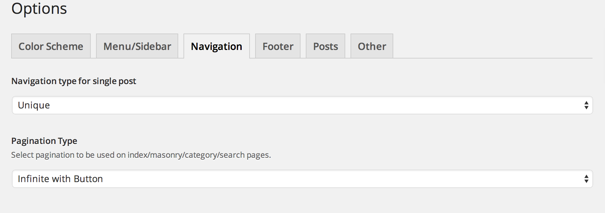
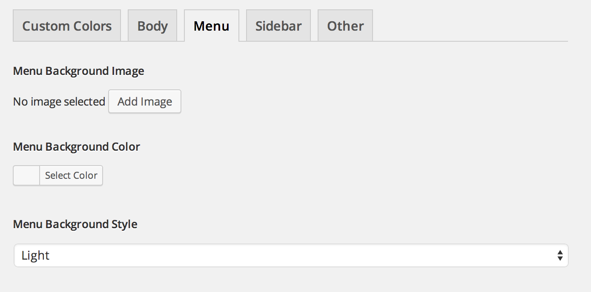

Theme Pluto Documentation
Thank you for purchasing my theme. If you have any questions that are beyond the scope of this help file, please feel free to contact me via email tamik@soziev.com. Thanks so much!
File structure
Here is a list of files and folder you receive with a purchase of Theme Pluto:
-
theme_pluto.zip
The main zip archive file which is going to be used for theme installation.
-
assets
Contains assets for the theme (images, fonts, css, less and other resources)
-
images
Images used for custom post types in admin and for demo data
-
inc
-
js_composer
Premium page builder plugin ( visit website )
-
js_composer_extend
Extending a page builder
-
lessphp
PHP Processor for LESS css engine ( visit website )
-
shortcodes_inc
Shortcodes for framed items
-
custom_post_types.php
Defines custom post types ( Testimonials, Pricing, Portfolio, Team Members, Slides )
-
custom_sidebars.php
Defines custom sidebars
-
custom_widgets.php
Defines custom widgets
-
db_queries.php
Custom functions to access custom post types
-
helper.php
Helper functions to used in various parts of theme
-
less_variables.php
Define variables for LESS css engine ( visit website )
-
shortcodes.php
Custom shortcodes for theme venera
-
twitter_bootstrap_nav_walker.php
Wordpress walker that generates navigation with bootstrap layout
-
wp-less.php
Main file to parse LESS css
-
js
Javascript files for theme
-
languages
Should contain translation files for this theme
-
less
-
bootstrap
Bootstrap framework styles ( visit website )
-
font-awesome
Iconed font Font Awesome styles ( visit website )
-
inc
Contains all less css files included into style.less
-
js_composer_custom
Custom styles for js composer page builder
-
custom_flexslider.less
Custom styles for flexslider
-
custom_mixins.less
Some custom mixins used throughout the theme
-
style.less
Main stylesheet file for this theme which gets compiled into style.css
-
comments.php
Comments template
-
content.php
Content for blog posts
-
content-audio.php
Content for audio format posts
-
content-quote.php
Content for quote format posts
-
footer.php
The template for displaying footer
-
functions.php
Main file for theme, defines all the functions related to theme venera
-
header.php
The header of our theme
-
image.php
The template for displaying image attachments
-
index.php
The most generic template file in a theme
-
page-blog.php
Blog list page template
-
page.php
The template for displaying all pages
-
search.php
The template for displaying search results pages.
-
searchform.php
The template for displaying search forms.
-
single-content.php
Content for single pages.
-
single-content-audio.php
Content for single audio pages.
-
single.php
The template for displaying all single posts.
-
style.css
Compiled stylesheet file from style.less
Theme Installation
In this section I will walk you through the process of Theme Pluto installation. In order to install the theme - you will need admin access to your wordpress site. It is very easy to install a theme and should not take you more then 10 minutes.
Installing your new theme
Video Tutorial:
Step by step guide:
- Unzip the archive file which you just downloaded from ThemeForest.
- Login to Wordpress admin for your website.
- Go to "Appearance" link in the side menu.
-
Then click the "Add New" button (or the "Install Themes" for older versions).
-
Click on the "Upload Theme" link
-
Now click on the button which says "Choose File"
-
Locate the file called pluto.zip and click "Install Now" button.
-
Once the installation is complete - click the "Activate" link.
-
Pluto requires some of the plugins to be installed in order for it to function. Just follow the prompts on the top of the screen and install and activate those plugins by clicking on "Begin Installing Plugins" link.
-
Well done! You have successfully activated your new theme. You should see something like this on your screen:
Theme Customization
This theme is fully customizable, it comes with a powerfull admin framework which allows you to edit fonts, colors and many more just by using your mouse.
Changing color scheme
We have prepared multiple color schemes for you, you can select a color scheme and then adjust it by setting colors and fonts manually which will override default theme settings. Here we will cover how to change a color scheme.
Step by step guide:
- Login to your wordpress admin panel
-
Click on "Options" page from a side menu
-
Now you can see multiple predefined color schemes, select the one you like and click "Save Options" button.
-
After you saved changes you can go to homepage and the new color scheme should be applied
Custom Fonts
-
By default theme uses Google fonts, however you can use a premium Adobe Typekit font library or myFonts.com library.
-
You have to copy/paste the url of the tag you receive from Google Fonts library.
-
Same goes for font family, copy/paste the font family name you receive from Google Fonts.
On the menu and sidebar settings panel you can select where you want the menu and sidebar to appear: left, right or on top of the page. It is also an important piece of configuration because you set the logo and logo text for your website here. Just click on the image selector button and upload your logo.
NOTE: By default the menu is only visible on single post pages and full width index. If you want to make menu visible on your homepage - you have to go to "Options -> Menu/Sidebar" and check the checkbox which says "show sidebar on masonry page".
Navigation & Pagination
In this panel you can set the type of navigation you want to use for single posts and index pages.
Index Pages:
- Infinite Scroll - infinite scroll pagination uses AJAX to load next set of posts when the user scrolls to the bottom of the page
- Infinite with Button - loads a next set of posts using AJAX when a user clicks 'load more posts' button
- Paginated Links - classic links to all of the pages of the blog posts.
- Default Links - default Wordpress styled links to next/previous posts.
Single Pages:
- Unique - navigation where previous and next post links are located on top and bottom of the post itself, comes very handy for readability.
- Classic - standard navigation type with links for next and previous posts located on the bottom of the post.

Footer section is controlling the text which is being output in the footer of the website, as well as the google analytics tracking code.
Custom Colors (Easy Method)
You can change default colors of the theme by simply clicking the checkbox "Enable custom colors", after you click it you can see four tabs start to appear next to the current tab. These tabs control every piece of customization available.
Custom styles controlling body appearance of the website.
-
Body Background Image
Select the image to be on the background of your website
-
Body Background Color
Select the color for the background of your website
-
Body Background Style
If you use dark background image or color, use dark style, otherwise use light.
Custom styles controlling appearance of the side/top menu.

-
Menu Background Image
Select the image to be on the background of the menu
-
Menu Background Color
Select the color for the background of the menu
-
Menu Background Style
If you use dark background image or color for the menu, use dark style, otherwise use light.
Custom styles controlling appearance of the sidebar.
-
Sidebar Background Image
Select the image to be on the background of sidebar
-
Sidebar Background Color
Select the color for the background of sidebar
-
Sidebar Background Style
If you use dark background image or color for the sidebar, use dark style, otherwise use light.
Other color settigns.
-
Highlight Accents
Accents of colors, you can find on widgets under headers and on the side menu just above the social icons.
-
Top Body Highlights
Color for highlight line on top of the page
Custom Colors (For Developers)
When you want to change appearance of your website beyong the setting in admin you can do so by modifying $scheme_vars array. Here is how you do it:
- If you open file: "/inc/colors/default.php" you will see a $scheme_vars array there, each key of the array holds a color setting for alms every element of the theme.
- Now in order for you to make changes and have them saved in the next version - you have to open file "/extend/custom_scheme_vars.php" and copy the $scheme_vars['KEY_YOU_WANT_TO_CHANGE'] into this file and assign it the value you want to be used on your site.
- Save the file and refresh the page - you should see an updated color settings.
Example:
So let me give you an example: say you want to change a border styling for post, say you want to remove it completely. Here is what you have to do:
- Open "/inc/colors/default.php" file and search for a $scheme_vars[ 'postBorder' ] array key.
- Copy this line ( $scheme_vars[ 'postBorder' ] = '1px solid #d1d7dc'; )
- Paste it at the end of '/extend/custom_scheme_vars.php' file
- Change '1px solid #d1d7dc' to 'none' in the custom_scheme_vars.php file
- Save the file, and now the post border is gone :)
Note: Unless you set a "enable custom colors" in admin and tried to change the same element's style it will override whatever you put in custom_scheme_vars.php
Important!: Make sure you backup custom_scheme_vars.php on your computer after you've added your custom colors to it before you update the theme, and once you install an updated theme - just paste the file you saved back into the "extend" folder.
FAQ
-
I am trying to change a color scheme or color settings but that does not work and nothing happens. Why is that happening?
There could be two possible reasons behind it:
Folder "wp-content/uploads" is not writable by server. Make sure you change its permissions to 775.
You should increase a memory limit in php.ini by adding/changing the following line: memory_limit = 512M
-
I am seeing an error: Fatal error: Class 'lessc' not found in /pluto/inc/less-variables.php on line 3
Looks like you are using really old version of PHP, make sure to install at least version PHP 5.3
-
I love how customizable is Pluto but I want more options.
There are two options for it, you can either add your custom styles to "/extend/custom-styles.less" file, or if you want to change a default variables which control styling - read this info
Make sure to backup both custom-styles.less and custom_scheme_vars.php before you re-install or update the theme. And paste them back in once you updated the theme.